IRTEQ: Windows Application that Implements IRT Scaling and Equating Version 1.0 |
|
Kyung (Chris) T. Han |
|
Preferred Citation: Han, K. T. (2009). IRTEQ: Windows application that implements IRT scaling and equating [computer program]. Applied Psychological Measurement, 33(6), 491-493. |
about IRTEQ |
Maintaining comparability of scores from different forms of a test (and/or from different test administrations) has been a major technical challenge for psychometricians. Today with a major focus of state testing programs on the assessment of growth, the challenge of maintaining comparability of scores has become even more important. Over the years, several IRT based scaling/equating methods have been developed to provide solutions (e.g., Hambleton, Swaminathan, & Rogers, 1991; Kolen & Brennan, 2004; Lord, 1980).
While equating methods research has flourished because of the need for technically sound designs and analyses, software development has been limited. The major testing companies of course have the software they need for scaling and equating but software available for researchers and graduate students is very limited. And, the few computer programs for test scaling and equating that have been developed for wide use, do not always include features of special interest to researchers. For example, available software cannot handle all the popular IRT models being applied to test data, and cannot handle some of the popular equating designs. Thus, a demand for a computer program that is more generalized and powerful for various uses in research and test development has grown in the field, and as a result, a Window application, called IRTEQ, was developed to address that need.
1. IRTEQ can rescale a test form to another using various IRT scaling methods.
There are a handful of IRT scaling/equating methods that are widely used with an anchor test design (or called the “Non-Equivalent Groups Anchor Test”): Mean/Mean (Loyd & Hoover, 1980), Mean/Sigma (Marco, 1977), Robust Mean/Sigma (Linn, Levine, Hastings, & Wardrop, 1981), and TCC methods (Haebara, 1980; Stocking & Lord, 1983). IRTEQ can implement all of these methods with various options. For TCC methods (Haebara, 1980; Stocking & Lord, 1983), IRTEQ provides the user with the option to choose various score distributions for incorporation into the loss function. See Appendix A for more discussioin of these options.
2. IRTEQ supports various IRT models for test forms.
IRTEQ supports various popular unidimensional IRT models: Logistic models for dichotomous responses (with 1, 2, or 3 parameters) and the Generalized Partial Credit Model (GPCM) (including Partial Credit Model (PCM), which is a special case of GPCM) and Graded Response Model (GRM) for polytomous responses. A mixture of IRT models used to calibrate the items in the test forms is also supported by the software, and the number of response categories can also vary. There is practically no limit to the number of items in each form or the linking item set (>10,000,000). IRTEQ can import item parameters and score data directly from WinGen (Han, 2007) and/or PARSCALE (Muraki & Bock, 2003).
3. IRTEQ can equate test scores on the scale of a test to another test using IRT true score equating.
In addition to test item scaling, IRTEQ also implements true score equating. Raw scores or test scores from one test form can be linked to another test form, and a test score to test score conversion table is provided. This is carried out using true score equating (see Lord, 1980).
4. IRTEQ provides an intuitive, user-friendly interface and also provides powerful research tools.
As a Windows application, IRTEQ employs intuitive, user-friendly graphic user interface (GUI), so the whole process of scaling and equating can be done with a few point-and-clicks. Also, IRTEQ can be operated with syntax files and cue files (similar to a batch file of DOS) for more intensive uses. Plots that compare a, b, and c-parameter estimates of the linking items across test forms are provided. The provision is available to easily drop linking items if they are identified as problematic in some sense. Test characteristic curves for each test form, the linking item set, and the rescaled test form are provided, too.
Figure 1. IRTEQ provides an intuitive, user-friendly graphic user interface.
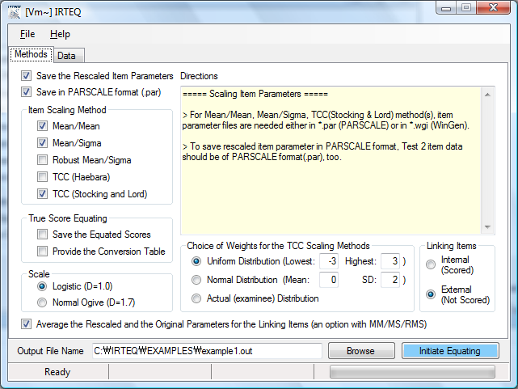
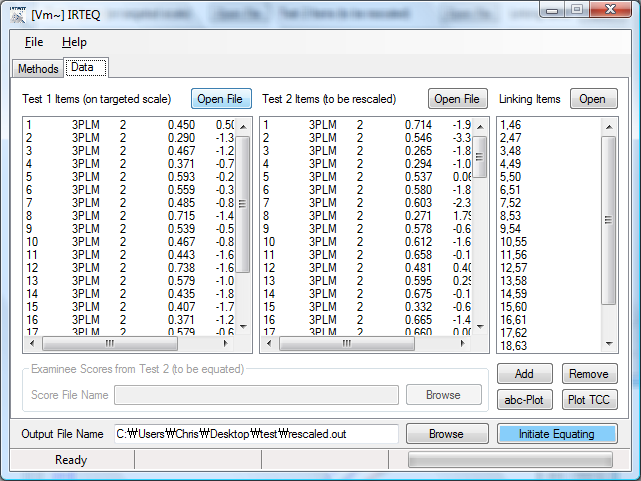
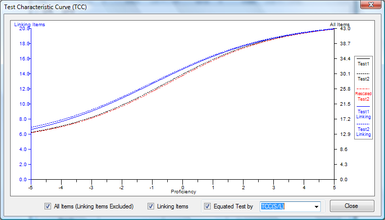
References
Hambleton, R. K., Swaminathan, H., & Rogers, H. J. (1991). Fundamentals of item response theory. Newbury Park, CA: Sage Publications.
Han, K. T. (2007). IRTEQ: Windows application that implements IRT scaling and equating [computer program]. Amherst, MA: University of Massachusetts, Center for Educational Assessment. Retrieved Nov 1, 2007, from http://www.umass.edu/remp/software/irteq/
Han, K. T. (2007). WinGen: Windows software that generates IRT parameters and item responses. Applied Psychological Measurement, 31(5), 457-459.
Kolen, M. J., & Brennan, R. L. (2004). Test equating, linking, and scaling: Methods and practices (2nd ed.). New York: Springer-Verlag.
Linn, R. L., Levine, M. V., Hastings, C. N., & Wardrop, J. L. (1981). Item bias in a test of reading comprehension. Applied Psychological Measurement, 5, 159-173.
Lord, F. M. (1980). Applications of item response theory to practical testing problems. Hillsdale, NJ: Lawrence Erlbaum Publishers.
Loyd, B. H., & Hoover, H. D. (1980). Vertical equating using the Rasch model. Journal of Educational Measurement, 17, 179-193.
Marco, G. L. (1977). Item characteristic curve solutions to three intractable testing problems. Journal of Educational Measurement, 14(2), 139-160.
Microsoft. (2002). Microsoft Windows XP [computer program]. Redmond, WA: Author.
Microsoft. (2005). Microsoft .NET framework version 2.0 [computer program]. Redmond, WA: Author.
Muraki, E., & Bock, R. D. (2003). PARSCALE 4: IRT item analysis and test scoring for rating-scale data [computer program]. Chicago, IL: Scientific Software.
Stocking, M. L., & Lord, F. M. (1983). Developing a common metric in item response theory. Applied Psychological Measurement, 7, 201-210.
APPENDIX A
Loss Functions for TCC Scaling Methods in IRTEQ
Haebara (1980) came up with an idea in which a TCC of the linking items in test Form 1 is directly compared to the other TCC of the linking items rescaled in Form 2. The scaling coefficients that minimize the difference between the two TCCs are to be obtained as the best scaling coefficients in his method. A loss function that is used to compare the two TCC is expressed as
|
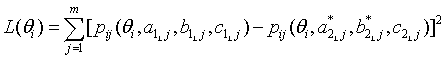 |
(1) |
where
|
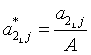 |
(2) |
and
|
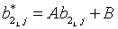 |
(3) |
In Equation (1), pij is an item characteristic function for i-th examinee and j-th item, and , and are discrimination, difficulty, and pseudo-guessing parameters, respectively, for j-th linking item in test form 1, and m is the number of the linking items. By Equations (2) and (3), the linking items in Form 2 are rescaled then used in the loss function (1). The loss function is evaluated across all examinees, and the scaling coefficients A and B are decided when
|
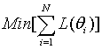 |
(4) |
where N is the number of examinees, and θi is the proficiency of i-th examinee (Haebara, 1980). Although Equation (4) results in the optimized scaling coefficients for the particular examinee distribution, with this method, the scaling coefficients become examinee-dependent. Thus, the Equation (4) is often replaced by
|
, |
(5) |
where Q is the number of the quadrature points within a certain range on theta scale, and θi is the theta value at i-th quadrature point. With Equation (5), the scaling coefficients obtained are not sample-dependent, and the loss function is uniformly evaluated in the targeted range. However, this method may not be preferable since the loss function evaluation is truncated around the range of the quadrature points, and, since the loss functions at the theta points where actual examinees would not be densely observed are as equally weighted as where most examinees are distributed. In another approach (Han, 2007), Equation (5) is replaced by
|
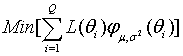 |
(6) |
where the is a probability density function (PDF) for a normal distribution. With this criterion for evaluating the loss functions, the scaling coefficients are not sample dependent. Since those loss functions that are around μ receive more weights, the scaling coefficients can be optimized where the most examinees are expected. In order that Equation (6) is appropriately used as a evaluation criterion for the loss functions, the normal distribution that would represents the actual population well should be chosen. In Figure 1, those three approaches to loss function evaluation are compared.
Stocking and Lord (1983) also provided a TCC scaling method, which is very similar to Haebara (1980). The only difference between the two methods is the computation of a loss function. In Stocking et al. (1983), a loss function at a score point θi is defined as
|
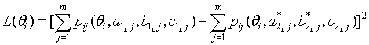 |
(7) |
Haebara (1980) and Stocking et al. (1983) methods usually result in scaling coefficients that are very close to each other even though the minimized values of the loss functions are different.
Figure A. Three Possible Distributions to Use in IRTEQ to Specify the Weighted Loss Functions (Uniform, Normal, and Actual).
Distribution |
Integral of Loss Function |
Minimization to Estimate A and B |
Uniform |
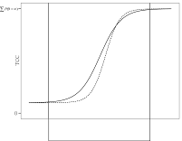 |
, where Q is the number of the quadrature points within a certain range on theta scale, and θi is the theta value at i-th quadrature point. |
Normal |
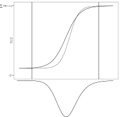 |
where the 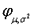 |
Actual |
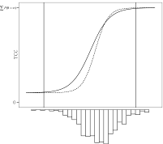 |
, where N is the number of examinees, and θi is the proficiency of i-th examinee. |
Downloads |
Note: IRTEQ has been developed for Microsoft Windows Vista (32bit or 64bit) or later version (ex. Windows 7). If your system is Windows XP Family and you have not installed Microsoft .NET framework 3.5 on your system before, it is necessary to install .NET framework 2.0 first (Download Here).
If you are not sure if your system has .NET framework, just run ’setup.exe’ file in IRTEQ_Han.zip. The installation program will automatically check your system and download .NET framework from Microsoft website if your system does not have it. However, it could take up to an hour depending on computer.
IRTEQ (October 17, 2018)
Download (IRTEQ_Han.zip)
Size: 534Kbyte
IRTEQ User’s Manual (November 1, 2007)
Download (IRTEQ_manual.pdf)
IRTEQ Example Data (November 1, 2007)
The file must be extracted in “C:\”. The example files should be in “C:\IRTEQ\EXAMPLES”.
Download (IRTEQ_exampleFiles.zip)
Size: 4Kbyte
WinGen2 |
SimulCAT |
Last updated:October 17, 2018
Created by Kyung (Chris) T. Han